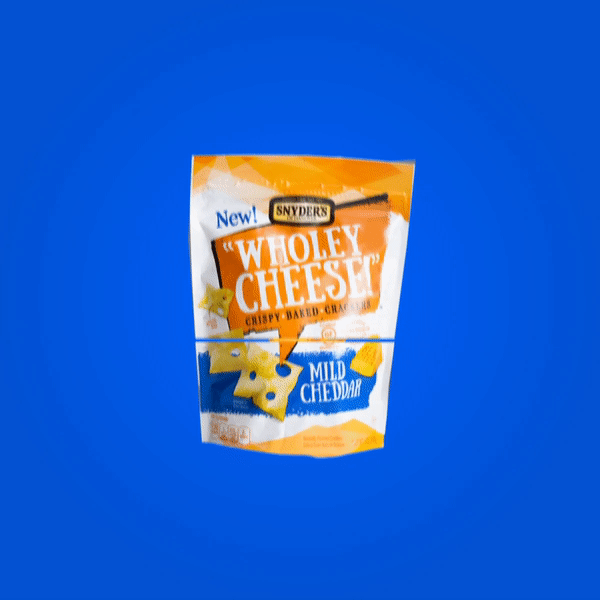
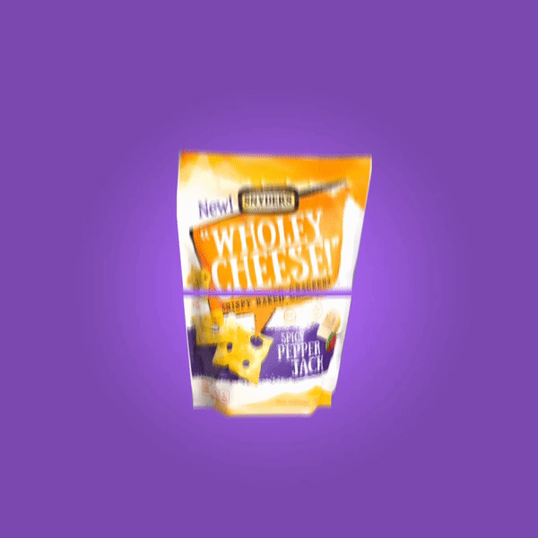

Wholey Cheese! is a brand that loves to display their core flavors in interesting ways. Once the previous round of flavor profiles was completed they were looking for a more dynamic approach to highlighting the ingredients. I utilized 3D modeling and animation to create eye catching ingredients that pop and spin out of the Wholey Cheese! bags.
 The Wholey Cheese! brand aims to relate to activities that their audience engages in, often times the client would ask for the bags themselves to be personified and animated in these settings. I was able to experiement with 2D and 3D elements to create this look and feel.